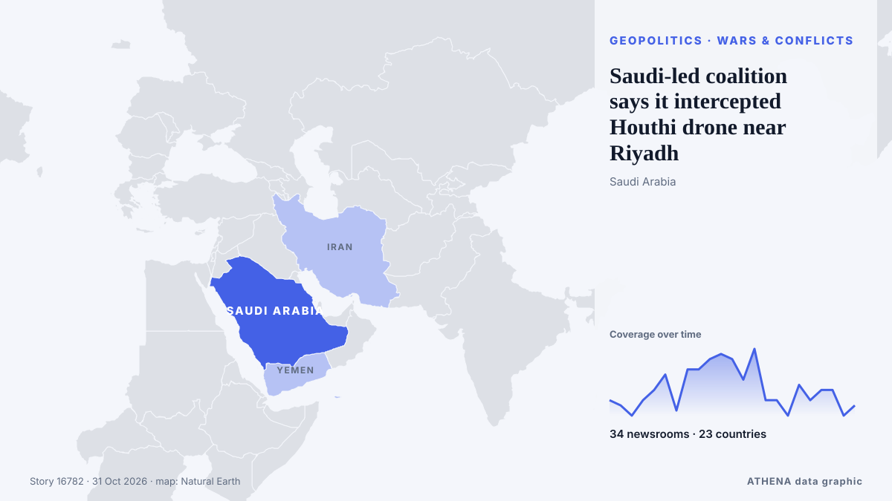

Saudi-led coalition says it intercepted Houthi drone near Riyadh

Riyadh: Saudi forces on Tuesday intercepted a ballistic missile aimed at the kingdom's capital, said a spokesman for the Riyadh-led coalition backing Yemen's government, after auth... из Oman Observer
Независимые источники: 34 издания в 23 странах, с 20 окт.; первым сообщил Oman Observer; освещение идёт на спад. ATHENA оценивает риск как повышенный (4.6/10), прежде всего из-за тяжести описываемого ущерба и географического и отраслевого охвата. Уверенность — 90 % (высокая); подтверждают независимые источники: 34 издания, средняя надёжность источников — 77 %. СМИ по странам: Саудовская Аравия (11), Пакистан (6), Турция (5). Освещение: с 20 окт. по 25 окт., 117 ч.
Почему это важно: Красное море и Баб-эль-Мандебский пролив — кратчайший морской путь между Азией и Европой через Суэцкий канал. Атаки на торговые суда вынуждают огибать Африку, что добавляет время и затраты мировой торговле.
Что изменилось: 5 новых сообщений от 3 редакций за 24 часа до 31 окт..
Первый заголовок: Saudi-Led Coalition Says It Intercepts Iran-Backed Houthi Ballistic Missile Targeting Riyadh
Заголовки приводятся на английском языке, как они были опубликованы.
Коротко в цифрах
Отобрано, оценено и написано по опубликованной методологии ATHENA. Ни один редактор не вмешивается в отдельные события. Как это создаётся ›
| 20 Oct 05:10 UTC | 3 |
|---|---|
| 20 Oct 17:10 UTC | 2 |
| 21 Oct 05:10 UTC | 0 |
| 21 Oct 17:10 UTC | 3 |
| 22 Oct 05:10 UTC | 5 |
| 22 Oct 17:10 UTC | 8 |
| 23 Oct 05:10 UTC | 1 |
| 23 Oct 17:10 UTC | 9 |
| 24 Oct 05:10 UTC | 9 |
| 24 Oct 17:10 UTC | 11 |
| 25 Oct 05:10 UTC | 12 |
| 25 Oct 17:10 UTC | 11 |
| 26 Oct 05:10 UTC | 7 |
| 26 Oct 17:10 UTC | 13 |
| 27 Oct 05:10 UTC | 3 |
| 27 Oct 17:10 UTC | 3 |
| 28 Oct 05:10 UTC | 0 |
| 28 Oct 17:10 UTC | 6 |
| 29 Oct 05:10 UTC | 3 |
| 29 Oct 17:10 UTC | 5 |
| 30 Oct 05:10 UTC | 5 |
| 30 Oct 17:10 UTC | 0 |
| 31 Oct 05:10 UTC | 2 |
| 22 Oct 07:04 UTC | 0.0 |
|---|---|
| 22 Oct 07:08 UTC | 1.7 |
| 24 Oct 00:44 UTC | 2.9 |
| 24 Oct 03:51 UTC | 3.7 |
| 24 Oct 06:46 UTC | 4.2 |
| 25 Oct 07:38 UTC | 5.0 |
| 26 Oct 09:47 UTC | 5.0 |
| 27 Oct 07:53 UTC | 5.0 |
| 29 Oct 01:28 UTC | 5.4 |
| 31 Oct 19:28 UTC | 4.6 |
| 31 Oct 19:28 UTC | 4.6 |
Откуда эти цифры
Значимость
Риск
Уверенность
Освещение — кто сообщил и когда
заголовок в оригинале · открывает источник- Oman Observer · ОманSaudi force intercept ballistic missile targeting Riyadh
- Arab Times · КувейтSaudi-Led Coalition Says It Intercepts Iran-Backed Houthi Ballistic Missile Targeting Riyadh
- Asharq Al-Awsat (English) · Саудовская АравияCoalition Says Intercepted Ballistic Missile Targeting Riyadh
- Arab Times · КувейтSaudi-led Coalition Intercepts Four Drones Targeting Kingdom
- Asharq Al-Awsat (English) · Саудовская АравияCoalition: Drones Launched Toward Saudi Arabia Intercepted, Destroyed
- Middle East Eye · INTSaudi-led coalition says four drones intercepted and destroyed in Eastern Province
- Anadolu Agency (English) · ТурцияSaudi-led coalition intercepts 4 drones over eastern Saudi Arabia
- Dawn · ПакистанSaudis intercept more drones as conflict with Houthis spirals
- China Daily — page reader · КитайDrones intercepted over Riyadh, other regions: Saudi-led coalition
- Anadolu Agency (English) · ТурцияSaudi-led coalition intercepts, destroys drone in Riyadh region
- Asharq Al-Awsat (English) · Саудовская АравияCoalition: Four UAVs Intercepted and Destroyed in Riyadh and Madinah Regions
- Middle East Eye · INTSaudi-led coalition claims drone downed over Riyadh
- Saudi Gazette · Саудовская АравияCoalition intercepts 9 UAVs in Madinah, Riyadh, and Eastern Province
- Middle East Eye · INTSaudi-led coalition says it intercepted two Houthi drones targeting Saudi Arabia
- Express Tribune · ПакистанYemeni army says over 35 Houthi fighters killed or wounded in Taiz
- Anadolu Agency (English) · ТурцияSaudi-led coalition says it intercepted 11 Houthi drones and a ballistic missile
- Middle East Eye · INTAlerts issued in Saudi Arabia's Riyadh and Najran, Saudi-led coalition says Houthi missiles intercepted
- Arab News · Саудовская АравияCoalition air defenses down missiles bound for Riyadh, Khamis Mushait amid ongoing Houthi attacks
- Asharq Al-Awsat (English) · Саудовская АравияCoalition Destroys Ballistic Missile, Drones, Denies Houthi Claims about Saudi Threats Against Tribal Gatherings
- Saudi Gazette · Саудовская АравияSaudi air defenses intercept Houthi missiles targeting Riyadh, Khamis Mushait
- Asharq Al-Awsat (English) · Саудовская АравияTwo Houthi Ballistic Missiles Intercepted Over Riyadh, Khamis Mushait
- Express Tribune · ПакистанSaudi-led coalition says it destroyed Houthi ballistic missiles fired towards Yanbu, Taif
- Arab News · Саудовская АравияCoalition forces down missiles and drone as Houthis keep up strikes on Saudi Arabia
- Middle East Eye · INTSaudi-led coalition says ballistic missile aimed at Riyadh destroyed
- Gulf News · ОАЭMiddle East war: US prepares fresh strikes on Iran; Houthi missile targets Riyadh; Tankers hit mines near Hormuz
- TASS (English) · РоссияArabian coalition shoots down Houthi ballistic missile over Riyadh
- Xinhua (English) — page reader · КитайSaudi-led coalition says intercepts Houthi ballistic missile targeting Riyadh
- Shafaq News (English) · ИракSaudi-led Coalition strikes Saada, Taiz
- Business Recorder · ПакистанTwo explosions heard in Riyadh following alert
- Oman Observer · ОманBallistic missiles targeting Saudi cities intercepted
- Middle East Eye · INTSaudi-led coalition says it destroyed Houthi ballistic missiles fired towards Yanbu and Taif
- Anadolu Agency (English) · ТурцияSaudi-led coalition says it intercepted 2 Houthi ballistic missiles targeting Saudi cities
- Asharq Al-Awsat (English) · Саудовская АравияSaudi Arabia Intercepts Three Missiles Targeting Riyadh, Taif and Yanbu
- APA (English) · АзербайджанSaudi-led coalition says it intercepted 2 Houthi ballistic missiles targeting Saudi cities
- Business Recorder · ПакистанSaudi forces say intercepted two Houthi missiles targeting Yanbu, Taif
- Saudi Gazette · Саудовская АравияAir defenses intercept Houthi ballistic missiles targeting Taif, Yanbu
- Al-Monitor · Соединенные ШтатыSaudi Arabia intercepts drones and missiles as fighting with Yemen's Houthis continues
- Express Tribune · ПакистанSaudi Arabia says two injured by falling debris from intercepted Houthi missiles
- Anadolu Agency (English) · ТурцияSaudi-led coalition intercepts drone over Riyadh region
- Middle East Eye · INTCoalition forces intercept another drone over Riyadh, spokesman says